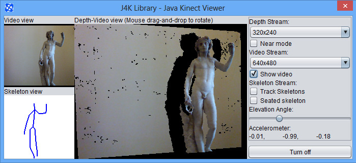

UFDW Java library
J4K Java library
J4KSDK.class API
DepthMap.class API
Skeleton.class API
VideoFrame.class API
Source Code Examples
SimpleExample
VideoViewerApp
KinectViewerApp
AugmentedRealityApp
ImageAvatarApp
XEDConvertApp
MultipleKinectApp
J4K Projects Gallery
Published Papers
Download
Install in Eclipse
Watch video tutorial
People
Frequently Asked Questions
J4K Java library
J4KSDK.class API
DepthMap.class API
Skeleton.class API
VideoFrame.class API
Source Code Examples
SimpleExample
VideoViewerApp
KinectViewerApp
AugmentedRealityApp
ImageAvatarApp
XEDConvertApp
MultipleKinectApp
J4K Projects Gallery
Published Papers
Download
Install in Eclipse
Watch video tutorial
People
Frequently Asked Questions
J4KSDK class
This class implements a Java binding for the Microsoft's Kinect SDK. It communicates with a native Windows library, which handles the video, depth, and skeleton streams of the Kinect using the Java Native Interface (JNI).
This class is part of the J4K library, which is included in the University of Florida Digital Worlds (ufdw.jar) Java library. This library was developed by Prof. Angelos Barmpoutis, and further extended by the students and faculty who work in the SAGE program (Serious and Applied Gaming Environments) at the Digital Worlds Institute. You can find more information about how to join our graduate and undergraduate programs at this link (www.digitalworlds.ufl.edu).
If you use this Java library in your research, please cite the following article, which introduced this library:
A. Barmpoutis. 'Tensor Body: Real-time Reconstruction of the Human Body and Avatar Synthesis from RGB-D', IEEE Transactions on Cybernetics, Special issue on Computer Vision for RGB-D Sensors: Kinect and Its Applications, October 2013, Vol. 43(5), Pages: 1347-1356. Download PDF - Kinect Avatars paper [VIDEO DEMO]
package edu.ufl.digitalworlds.j4k;
abstract public class J4KSDK {
abstract public class J4KSDK {
The following methods construct a new object of the J4KSDK class and offer different ways to start/stop the various streams of the Kinect sensor (depth, video, skeleton).
/*The constructor of the J4KSDK class. It establishes connection with the native
library, which uses the Microsoft's Kinect SDK. This constructor can
automatically initialize the object based on the type of the Kinect sensor that
is connected. If various types of sensors are connected priority is given to
Kinect 1 devices.*/
public J4KSDK();
/*These two constants specify the different types of Kinect sensors to be used
in the following constructors.*/
public static final byte MICROSOFT_KINECT_1 = 0x1;
public static final byte MICROSOFT_KINECT_2 = 0x2;
/*Another constructor of the J4KSDK class. This constructor instantiates
the object based the type of the Kinect sensor, which is passed as argument.*/
public J4KSDK(byte kinect_type);
/*This constructor instantiates the object based the type of the Kinect sensor and
id, which are passed as arguments. For example if there are two Kinect 1 sensors,
the first one corresponds to id=0 and the second one to id=1.*/
public J4KSDK(byte kinect_type, int id);
/*The following constants represent the different types of data streams.*/
public static final int COLOR = 0x1;
public static final int INFRARED = 0x2;
public static final int LONG_EXPOSURE_INFRARED = 0x4;
public static final int DEPTH = 0x8;
/*PLAYER_INDEX is a stream of 2D image frames, which contain the id of the depicted
player in each pixel of the depth frame.*/
public static final int PLAYER_INDEX = 0x10;
public static final int SKELETON = 0x20;
/*UV is a stream of 2D frames, which contain the U,V texture coordinate mapping for
each pixel in the depth frame.*/
public static final int UV = 0x100;
/*XYZ is a stream of 2D frames, which contain the X,Y,Z coordinates that correspond
to each depth pixel in the depth frame.*/
public static final int XYZ = 0x1000;
/* This method turns on the Kinect sensor and initializes the data streams
specified by the input flags. The flags can be specified using the above types
of streams according to your needs. For example flag=COLOR | DEPTH | SKELETON;
initializes the color, depth, and skeleton streams.*/
public int start(int flags);
/*This method turns off the Kinect sensor, and stops all the open streams.*/
public void stop();
The following 3 abstract methods are automatically called every time a new data frame is received from the Kinect sensor. You have to implement them in your own program according to the needs of your application. A simple implementation is available here.
/*This abstract method is called when a new depth frame is received by the sensor.
Optionally, the corresponding player index, XYZ coordinates in the 3D space and
U,V mapping to the color frame could also be provided for each pixel of the depth
frame, if PLAYER_INDEX, XYZ, or UV flags were used when the stream started.*/
abstract public void onDepthFrameEvent(short[] depth_frame, byte[] player_index,
float[] xyz, float[] uv);
/*This abstract method is called when a new skeleton frame is received by
the sensor. The skeleton data contain flags that indicate which of the 6
skeletons is tracked, the coordinates and orientations of the joints of the
skeletons, and the state of each joint (i.e. TRACKED, INFERRED, or NOT_TRACKED
from the Skeleton class).*/
abstract public void onSkeletonFrameEvent(boolean[] skeleton_tracked, float[]
joint_positions, float[] joint_orientations, byte[] joint_state);
/*This abstract method is called when a new color frame is received by the sensor
(in raw BGRA format).*/
abstract public void onColorFrameEvent(byte[] color_data);
/*This method is called when a new infrared frame is received by the sensor. You
can override this method with your own implementation.*/
public void onInfraredFrameEvent(short[] data);
/*This method is called when a new long exposure infrared frame is received by the
sensor. You can override this method with your own implementation.*/
public void onLongExposureInfraredFrameEvent(short[] data);
At any time you can get the most recent data frame received from the Kinect sensor using the following methods. Typically, these methods will not be used because the actual kinect data processing should be performed inside the implementation of the 3 abstract methods describred above.
/*This method returns the most recent infrared frame data.*/
public short[] getInfraredFrame();
/*This method returns the most recent long exposure infrared frame data.*/
public short[] getLongInfraredFrame();
/*This method returns the most recent color frame data.*/
public byte[] getColorFrame();
/*This method returns the most recent skeleton data as Skeleton objects.*/
public Skeleton[] getSkeletons();
/*This method returns the most recent depth frame.*/
public short[] getDepthFrame();
/*This method returns the XYZ coordinates of the most recent depth frame.*/
public float[] getXYZ();
/*This method returns the UV mapping of the most recent depth frame.*/
public float[] getUV();
The J4KSDK class contains a method, the 'showViewerDialog', which displays the streams of the Kinect sensor and also contains a simple graphical user interface for changing some of the parameters of the sensor.
/*This method starts a dialog window that shows the current video, depth, and
skeleton frames, as well as other information about the sensor. It requires
the JOGL library.*/
public void showViewerDialog();
This is a screenshot of the dialog window that opens when you call the 'showViewerDialog' method described above.

The following methods return the current values of various parameters of the Kinect streams.
/*This method returns the current status of the sensor.*/
public boolean isInitialized();
/*This method returns the type of kinect controlled by this object.*/
public byte getDeviceType();
/*This method returns the J4K implementation object that corresponds to the
type of Kinect controlled by this object.*/
public Object getJ4KClass();
/*This method returns the maximum number of possible tracked skeletons
according to the version of Kinect device.*/
public int getSkeletonCountLimit();
/*This method returns the width of the color stream (in pixels).*/
public int getColorWidth();
/*This method returns the height of the color stream (in pixels).*/
public int getColorHeight();
/*This method returns the width of the depth stream (in pixels).*/
public int getDepthWidth();
/*This method returns the height of the depth stream (in pixels).*/
public int getDepthHeight();
/*This method returns the width of the infrared stream (in pixels).*/
public int getInfraredWidth();
/*This method returns the height of the infrared stream (in pixels).*/
public int getInfraredHeight();
/*This method returns the width of the long exposure infrared stream (in pixels).*/
public int getLongExposureInfraredWidth();
/*This method returns the height of the long exposure infrared stream (in
pixels).*/
public int getLongExposureInfraredHeight();
/*This method returns the focal length along the x-axis of the depth camera.*/
public float getFocalLengthX();
/*This method returns the focal length along the y-axis of the depth camera.*/
public float getFocalLengthY();
/*This method returns the X coordinate of the Principal point of the depth
camera.*/
public float getPrincipalPointX();
/*This method returns the Y coordinate of the Principal point of the depth
camera.*/
public float getPrincipalPointY();
/*This method returns the 2nd order radial distortion of the depth camera.*/
public float getRadialDistortionOrder2();
/*This method returns the 4th order radial distortion of the depth camera.*/
public float getRadialDistortionOrder4();
/*This method returns the 6th order radial distortion of the depth camera.*/
public float getRadialDistortionOrder6();
/*This method enables or disables the computation of the U,V texture mapping. It
is disabled by default.*/
public void computeUV(boolean flag);
Finally, you can set or read various parameters of the Kinect sensor (elevation angle, depth sensing mode, accelerometer values, total number of connected sensors) using the following methods. These parameters are features of the Kinect 1 sensor and may not apply to the new Kinect sensor.
/*This method returns the elevation angle of the Kinect 1 sensor (in degrees)*/
public long getElevationAngle();
/*This method turns on/off the 'near depth mode' sensing of the Kinect 1 sensor.*/
public boolean setNearMode(boolean flag);
/*This method returns the current mode of depth sensing in Kinect 1.*/
public boolean getNearMode();
/*This method returns the current reading of the accelerometer of Kinect 1.*/
public float[] getAccelerometerReading();
/*This method enables or disables the seated skeleton tracking mode in Kinect 1.*/
public boolean setSeatedSkeletonTracking(boolean flag);
/*This method sets the depth resolution of the Kinect 1 sensor. It must be used
before starting the stream with the start(int) method.*/
public void setDepthResolution(int w, int h);
/*This method sets the color resolution of the Kinect 1 sensor. It must be used
before starting the stream with the start(int) method.*/
public void setColorResolution(int w, int h);
What to do next:
Disclaimer: The names JAVA and KINECT and their associated logos are trademarks of their respective copyright owners Oracle and Microsoft. None of these companies endorse, fund, or are in any way associated with the J4K library.
Disclaimer: This software is provided for free without any warranty expressed or implied for academic, research, and strictly non commercial purposes only. By downloading this library you accept the Terms and Conditions.